사회조사분석사-2급 (2016-05-08 기출문제)
1과목: 조사방법론 I
1. 연구방법론의 접근방법 중 실증주의와 해석주의의 비교 설명으로 틀린 것은?
- 실증주의에서 지식은 직접 관찰할 수 있는 현상에 토대를 둔다.
- 실증주의에서 사회현상은 실험과 같은 자연과학의 원리를 사용함으로써 연구되어야 한다.
- 해석주의에서는 신뢰성과 일반화보다는 타당성을 강조한다.
- 해석주의에서 설명은 인과법칙의 형성 또는 일반화의 법칙을 통해 이루어진다.
(정답률: 56%)

2. 질적 연구에 대한 설명으로 틀린 것은?
- 자료처리를 위해 컴퓨터프로그램을 사용하지 않는다.
- 사례기술적 이해를 추구한다.
- 신뢰도에 있어서 문제가 있을 수 있다.
- 포커스그룹 면접도 질적 연구에 해당한다.
(정답률: 81%)
3. 전자 서베이(on-line or electronic survey)에 관한 설명으로 옳은 것은?
- 모집단의 특성에 관계없이 표본추출이 자유롭다.
- 현재로서는 설문발송과 회수에 비용이 거의 들지 않는다.
- 전자메일을 통한 추적독촉이 쉽지 않다는 단점이 있다.
- 설문결과를 데이터로 처리하여 입력하기 힘들다는 문제가 있다.
(정답률: 75%)
4. 통제집단 사전사후측정실험설계(protest-posttest control group design)의 핵심적 특징을 모두 고른 것은?
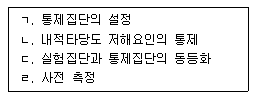
- ㄱ, ㄴ
- ㄷ, ㄹ
- ㄱ, ㄴ, ㄷ
- ㄱ, ㄴ, ㄷ, ㄹ
(정답률: 85%)
5. 가설의 평가기준과 가장 거리가 먼 것은?
- 실제 자료를 통하여 진위가 입증될 수 있어야 한다.
- 동일분야의 다른 이론과 연관성이 없어야 한다.
- 검증결과를 광범위하게 이용할 수 있어야 한다.
- 간단명료하게 표현되어야 하고 논리적으로 간결해야 한다.
(정답률: 86%)
6. 연구방법으로서의 연역적 접근법과 귀납적 접근법에 관한 설명으로 틀린 것은?
- 연역적 접근법을 취하려면 기존 이론에 대한 분석이 필요하다.
- 귀납적 접근법은 현실세계에 대한 관찰을 통해 경험적 일반화를 추구한다.
- 사회조사에서 연역적 접근법과 귀납적 접근법은 상호 보완적으로 사용된다.
- 연역적 접근법은 탐색적 연구에, 귀납적 접근법은 가설 검증에 주로 사용된다.
(정답률: 78%)
7. 다음 ( )에 알맞은 것은?
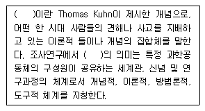
- 패러다임(paradigm)
- 명제(proposition)
- 법칙(law)
- 공리(axioms)
(정답률: 83%)
8. 관찰자의 유형에 관한 설명으로 틀린 것은?
- 완전참여자는 윤리적 및 과학적 문제가 발생할 수 있다.
- 연구자가 완전참여자일 때는 연구대상에 영향을 미치지 않는다.
- 완전관찰자의 관찰은 피상적이고 일시적이 될 수 있다.
- 완전관찰자는 완전참여자보다 연구대상을 충분히 이해할 수 있는 가능성이 낮다.
(정답률: 77%)
9. 관찰을 통한 자료수집시 지각과정에서 나타나는 오류를 감소하기 위한 방안으로 틀린 것은?
- 보다 큰 단위의 관찰을 한다.
- 객관적인 관찰 도구를 사용한다.
- 관찰기간을 될 수 있는 한 길게 잡는다.
- 가능한 한 관찰단위를 명세화해야 한다.
(정답률: 72%)
10. 우편조사, 전화조사, 대면면접조사에 관한 비교설명으로 옳은 것은?
- 우편조사의 응답률이 가장 높다.
- 우편조사와 전화조사는 자기기입식 자료수집방법이다.
- 대면면접조사에서는 추가질문하기가 가장 어렵다.
- 어린이나 노인에게는 대면면접조사가 가장 적절하다.
(정답률: 81%)
11. 다음 질문항목의 문제점에 해당하는 것은?
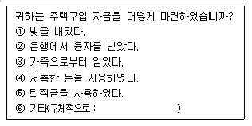
- 간결성
- 명확성
- 상호배타성
- 포괄성
(정답률: 66%)
12. 사후실험(Ex-Post Facto Experiment) 설계에 관한 설명으로 틀린 것은?
- 독립변수를 조작할 수 없는 상태 또는 이미 노출된 상태에서 변수들 간의 관계를 검증하는 방법이다.
- 독립변수에 대한 통제가 윤리적으로 바람직하지 않을 때 사용될 수 있다.
- 일반적인 실험설계보다 종속변수에 영향을 줄 수 있는 변수의 통제가 용이하다.
- 실제 상황에서 검증하기 때문에 일반적인 실험설계에 비해서 현실성이 높은 결과를 얻을 수 있다.
(정답률: 61%)
13. 조절변수를 활용한 가설에 해당하는 것은?
- 소득은 삶의 만족도에 영향을 미친다.
- 소득이 삶의 만족도에 미치는 영향은 성별에 따라 다르다.
- 소득과 삶의 만족도는 밀접한 관계가 있다.
- 소득은 의료접근성을 통하여 삶의 만족도에 영향을 미친다.
(정답률: 56%)
14. 연구유형에 관한 설명으로 틀린 것은?
- 순수연구-이론을 구성하거나 경험적 자료를 토대로 이론을 검증한다.
- 평가연구-응용연구의 특수형태로 진행중인 프로그램의 의도한 효과를 가져왔는가를 평가한다.
- 탐색적 연구-선행연구가 빈약하여 조사연구를 통해 연구해야 할 속성을 개념화한다.
- 기술적 연구-축적된 자료를 토대로 특정된 사실관계를 파악하여 미래를 예측한다.
(정답률: 68%)
15. 초점집단(focus group) 조사와 델파이 조사에 관한 설명으로 옳은 것은?
- 초점집단 조사에서는 익명 집단의 상호작용을 통해 도출된 자료를 분석한다.
- 초점집단 조사는 내용타당도를 높이는 목적으로 사용될 수 있다.
- 델파이 조사는 비구조화 방식으로 정보의 흐름을 제어한다.
- 델파이 조사는 대면(face to face) 집단의 상호작용을 통해 도출된 자료를 분석한다.
(정답률: 58%)
16. 다음 사례에서 영향을 미칠 수 있는 대표적인 내적 타당도 저해요인은?
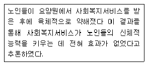
- 성숙효과(maturation)
- 외부사건(history)
- 검사효과(testing)
- 도구효과(instrumentation)
(정답률: 72%)
17. 과학적 방법의 특징에 관한 설명으로 틀린 것은?
- 간결성 최소한의 설명변수만을 사용하여 가능한 최대의 설명력을 얻는다.
- 인과성 모든 현상은 자연발생적인 것이어야 한다.
- 일반성 경험을 통해 얻은 구체적 사실로 보편적인 원리를 추구한다.
- 경험적 검증가능성 이론을 현실세계에서 경험을 통해 검증이 될 수 있어야 한다.
(정답률: 81%)
18. 비구조화(비표준화) 면접에 관한 설명으로 틀린 것은?
- 부호화가 어렵다.
- 미개척 분야의 개발에 적합하다.
- 심층적인 질문이 가능하다.
- 면접자의 편의(bias)가 개입될 가능성이 적다.
(정답률: 85%)
19. 다음 중 우편조사를 위한 질문지의 조사안내문에 포함해야 할 내용과 가장 거리가 먼 것은?
- 연구자(또는 조사자)의 연락처
- 실시기관
- 응답에 대한 비밀유지
- 표본의 규모와 응답자의 범위
(정답률: 79%)
20. 인터넷조사에 관한 설명으로 틀린 것은?
- 인터넷 사용가능자에 한해서만 조사된다.
- 인터넷 표본의 모집단을 규정하기 힘들다.
- 본인 확인이 불가능한 경우 중복 조사될 수 있다.
- 표본수의 증감에 따른 조사비용의 증감이 크다.
(정답률: 86%)
21. 과학적 조사의 절차로 가장 적합한 것은?
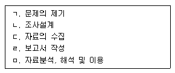
- ㄱ→ㄴ→ㄷ→ㅁ→ㄹ
- ㄱ→ㄷ→ㄴ→ㅁ→ㄹ
- ㄷ→ㄴ→ㄱ→ㅁ→ㄹ
- ㄷ→ㄱ→ㄴ→ㅁ→ㄹ
(정답률: 78%)
22. 다음 설명에 해당하는 질문의 종류는?
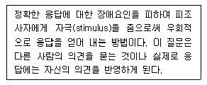
- 투사법(projective method)
- 오진선택법(error-choice method)
- 정보검사법(information test)
- 단어연상법(word association)
(정답률: 84%)
23. 다음 중 실험설계가 가장 적합한 상황은?
- 지역사회의 최우선 현안문제가 무엇인지 알기 위해 서베이하고자 할 때
- 국제결혼의 이혼률을 파악하고자 할 때
- 지역아동센터의 접근성을 분석하고자 할 때
- 무료급식 서비스를 제공받은 노숙자의 변화를 분석하고자 할 때
(정답률: 74%)
24. 다음 중 실험설계의 특징이 아닌 것은?
- 실험의 검증력을 극대화 시키고자 하는 시도이다.
- 연구가설의 진위여부를 확인하는 구조화된 절차이다.
- 실험의 내적 타당도를 확보하기 위한 노력이다.
- 조작(manipulation)적 상황을 최대한 배제하고 자연적 상황을 유지해야 하는 표준화된 절차이다.
(정답률: 82%)
25. 다음 중 분석단위와 연구내용이 잘못 짝지어진 것은?
- 개인-전체 농부 중에서 32%가 여성임에도 불구하고 여성은 전통적으로 농부라기보다 농부의 아내로 인식되었다.
- 개인-1970년부터 지금까지 고용주가 게재한 구인광고의 내용과 강조점이 어떻게 변화하였는지 파악하였다.
- 도시-인구가 10만명 이상인 도시 중 89%는 적어도 종합병원이 2개 이상 있었다.
- 도시-흑인이 많은 도시에서 범죄율이 높은 것으로 나타났다.
(정답률: 64%)
26. 양적연구와 질적연구의 비교설명으로 틀린 것은?
- 양적연구는 연구대상의 관계를 통계적으로 분석하여 밝히는 연구이다.
- 질적연구는 강제적 측정과 통제된 측정을 이용하는 방법이다.
- 질적연구는 주관적 해석적 연구방법이다.
- 양적연구는 확인 지향적 또는 확증적 연구방법이다.
(정답률: 74%)
27. 다음에 해당하는 연구 형태는?
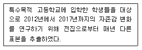
- 동류집단 분석(cohort study)
- 패널 연구(panel study)
- 횡단적 연구(cross sectional study)
- 경향성 연구(trend study)
(정답률: 60%)
28. 다음과 같은 조사방법의 특징으로 옳은 것은?
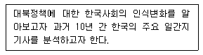
- 표본추출(sampling)이 불가능하다.
- 인간의 모든 형태의 의사소통기록물을 활용할 수 있다.
- 사전조사가 필요하지 않아 경제적이다.
- 수량적 분석이 불가능하다.
(정답률: 65%)
29. 질문지에 사용되는 질문이나 진술을 작성하는 원칙과 가장 거리가 먼 것은?
- 항목들이 명확해야 한다.
- 질문항목들은 되도록 짧아야 한다.
- 부정어가 포함된 질문을 반드시 포함한다.
- 편견에 치우친 항목과 용어를 지양한다.
(정답률: 83%)
30. 비반응적(nonreactive) 자료수집방법으로 가장 적합한 것은?
- 참여적 관찰을 하는 것
- 일기, 편지 등 사적인 문서를 수집하는 것
- 조사대상자를 심층면접하는 것
- 자기기입식 설문조사를 하는 것
(정답률: 68%)
2과목: 조사방법론 II
31. 크론바하의 알파값에 대한 설명으로 틀린 것은?
- 표준화된 크론바하의 알파값은 0에서 1에 이르는 값으로 존재한다.
- 문항 간의 평균 상관계수가 높을수록 크론바하의 알파값도 커진다.
- 문항의 수가 적을수록 크론바하의 알파값은 커진다.
- 크론바하의 알파값이 클수록 신뢰도가 높다고 인정된다.
(정답률: 72%)
32. 모집단으로부터 매 k번째 표본을 추출해내는 방법은?
- 군집표본추출법(cluster sampling)
- 편의표본추출법(convenience sampling)
- 계통표본추출법(systematic sampling)
- 단순무작위표본추출법(simple random sampling)
(정답률: 79%)
33. 편의표본추출(convenience sampling)에 관한 설명과 가장 거리가 먼 것은?
- 모집단에 대한 정보가 전혀 없는 경우에 사용된다.
- 편의표집으로 수집된 자료라 할지라도 유용한 정보를 제공할 수 있다.
- 편의표집에 의해 얻어진 표본에 대해서는 표준오차 추정치를 부여할 수 없다.
- 표본의 크기를 확대하여 모집단의 대표성 문제를 해결할 수 있다.
(정답률: 53%)
34. 일반적으로 표본추출과정에서 가장 마지막에 이루어지는 것은?
- 표본프레임의 결정
- 표본추출방법의 결정
- 모집단의 확정
- 표본크기의 결정
(정답률: 57%)
35. 조작적 정의의 예와 가장 거리가 먼 것은?
- 빈곤-물질적인 결핍 상태
- 소득-월 ( )만원
- 서비스만족도-재이용 의사 유무
- 신앙심-종교행사 참여 횟수
(정답률: 62%)
36. 측정 오차(error of measurement)에 관한 설명으로 틀린 것은?
- 신뢰성은 체계적 오차(systematic error)와 관련된 개념이다.
- 무작위 오차(random error)는 오차의 값이 다양하게 분산되어 있으며 상호 상쇄되는 경향도 있다.
- 체계적 오차(systematic error)는 오차가 일정하거나 한쪽으로 치우쳐 있다.
- 무작위 오차(random error)는 측정대상 측정과정 측정수단 측정자 등에 일관성 없이 영향을 미쳐 발생하는 오차이다.
(정답률: 68%)
37. 측정 오차를 최소화하는 방법과 가장 거리가 먼 것은?
- 측정항목 수를 가능한 한 늘린다.
- 문장을 간단하고 명료하게 구성한다.
- 다각도 검증(triangulation)을 수행한다.
- 응답자가 관심이 없는 내용도 설득하여 응답하게 한다.
(정답률: 77%)
38. 타당성 중에서 연구자가 설계한 측정도구 자체가 측정하려는 개념이나 속성을 제대로 대표하고 있는지의 여부를 나타내는 것은?
- 구성 타당성(construct validity)
- 내용 타당성(content validity)
- 경험적 타당성(empirical validity)
- 개념적 타당성(concept validity)
(정답률: 50%)
39. 다음 척도에 관한 설명으로 옳은 것은?
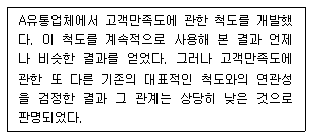
- 신뢰성은 있지만 타당성은 없다.
- 타당성은 있지만 신뢰성은 없다.
- 신뢰성과 타당성이 모두 낮다.
- 신뢰성과 타당성의 유무를 알 수 없다.
(정답률: 75%)
40. 일반적으로 가장 적은 정보를 제공해주는 측정수준은?
- 서열척도
- 비율척도
- 명목척도
- 등간척도
(정답률: 77%)
41. 다음과 같이 양극단의 상반된 수식어 대신 하나의 수식어(unipolar adjective)만을 평가기준으로 제시하는 척도는?
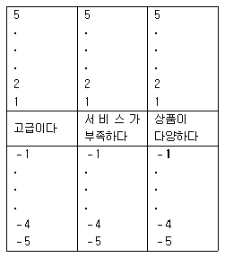
- 스타펠척도(stapel scale)
- 리커트척도(likert scale)
- 거트만척도(guttman scale)
- 서스톤척도(thurstone scale)
(정답률: 58%)
42. 다음 중 확률표본추출방법에 해당하는 것은?
- 층화표본추출법(stratified sampling)
- 판단표본추출법(judgemental sampling)
- 할당표본추출법(quota sampling)
- 눈덩이표본추출법(snowball sampling)
(정답률: 78%)
43. 등간측정의 성격을 모두 가지고 있으면서 동시에 실제적인 의미가 있는 절대 0(absolute zero) 혹은 자연적인 0(natural zero)을 갖춘 측정의 수준은?
- 비율측정
- 서열측정
- 명목측정
- 독립측정
(정답률: 81%)
44. 다음 예와 같이 응답자에게 한 속성의 보유 정도를 기준으로 다른 속성의 보유 정도를 판단하도록 하는 척도법은?
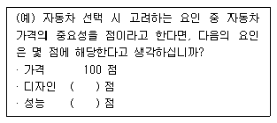
- 고정총합척도법(constant sum method)
- 연속평정법(continuous rating)
- 항목평정법(itemized rating)
- 비율분할법(fractionation method)
(정답률: 34%)
45. 척도구성에서 척도의 일부를 이루는 개별문항들에 대한 기본적인 가정으로 가장 적합한 것은?
- 개별문항은 양적 속성을 가지지만, 그것은 결국 질적 속성으로 변환될 수 있어야 한다.
- 개별문항은 다차원적이어야 하며, 이들이 논리적으로나 경험적으로 연결된 다수의 개념을 반영하여야 한다.
- 개별문항은 하나의 연속체를 이루어야 하며, 이 연속체는 단 하나의 개념을 반영하여야 한다.
- 개별문항은 둘 이상의 개념을 별도로 점수화하는데 적합하여야 하며, 이들 개념은 통계적으로 조작이 불가능한 질적 개념이어야 한다.
(정답률: 55%)
46. 표집 틀(sampling frame)을 평가하는 주요 요소와 가장 거리가 먼 것은?
- 포괄성
- 안정성
- 추출확률
- 효율성
(정답률: 58%)
47. 개념을 경험적 수준으로 구체화하는 과정을 바르게 나열한 것은?
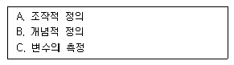
- A→B→C
- B→A→C
- C→A→B
- C→B→A
(정답률: 69%)
48. 신뢰성을 평가하는 방법으로 틀린 것은?
- 반분법
- 재검사법
- 내적 일관성법
- 구성체 신뢰도법
(정답률: 63%)
49. 우리나라 100대 기업의 연간 순수입을 ‘원(￦)’ 단위로 조사하고자 할 때 측정의 수준은?
- 명목측정
- 서열측정
- 등간측정
- 비율측정
(정답률: 69%)
50. 신뢰성을 높이는 방법과 가장 거리가 먼 것은?
- 측정항목의 모호성을 제거한다.
- 측정항목의 수를 늘린다.
- 동일하거나 유사한 질문을 하지 않는다.
- 신뢰성이 있다고 인정된 측정도구를 이용한다.
(정답률: 67%)
51. 확률표집에 관한 설명과 가장 거리가 먼 것은?
- 표집오차(sampling error)를 추정 가능하다.
- 표본의 크기가 커질수록 대표성이 높아진다.
- 표본구성요소들을 추출하기 위해 무작위적인 방법을 사용한다.
- 표본의 크기가 커질수록 표집오차는 정비례적으로 증가한다.
(정답률: 73%)
52. 리커트(Likert) 척도의 장점이 아닌 것은?
- 항목의 우호성 또는 비우호성을 평가하기 위해 평가자를 활용하므로 객관적이다.
- 적은 문항으로도 높은 타당도를 얻을 수 있어서 매우 경제적이다.
- 응답 카테고리가 명백하게 서열화되어 응답자에게 혼란을 주지 않는다.
- 한 항목에 대한 응답의 범위에 따라 측정의 정밀성을 확보할 수 있다.
(정답률: 40%)
53. 소시오메트리 척도에 관한 설명과 가장 거리가 먼 것은?
- 집단결속력의 정도를 저울질하는 데 사용된다.
- 조사대상인원이 소수일 때 적용이 용이하다.
- 통계학에서 다루는 조합의 원리가 적용된다.
- 조사대상집단 구성원 모두 동질성을 띠어야 한다.
(정답률: 57%)
54. 앞으로 10년 간 우리나라의 경제상황에 대한 예측을 하기 위해 경제학 교수 100명에게 설문조사를 실시하였다. 이 조사에서 사용된 표본추출방법은?
- 할당표본추출
- 판단표본추출
- 편의표본추출
- 눈덩이표본추출
(정답률: 58%)
55. 우리나라 고등학생 집단을 학년과 성별, 계열별(인문계, 자연계, 예체능계)로 구분하여 할당 표본추출을 할 경우 총 몇 개의 범주로 구분되는가?
- 6개
- 12개
- 18개
- 24개
(정답률: 73%)
56. 눈덩이표본추출(snowball sampling)에 관한 옳은 설명을 모두 고른 것은?
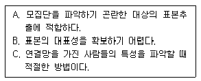
- A, B
- B, C
- A, C
- A, B, C
(정답률: 66%)
57. 신뢰성 측정방법인 검사-재검사법(test-retest method)에 관한 설명으로 가장 적합한 것은?
- 홀수문항과 짝수문항의 응답을 비교하는 방식으로 수행하기도 한다.
- 내적 일치도를 측정하는 신뢰성 측정방법이다.
- 검사 재검사 간격이 너무 짧으면 기억효과 때문에 신뢰성이 낮아진다.
- 동일한 문항을 반복해서 측정하는 것이다.
(정답률: 40%)
58. 표본추출과 관계없이 자료를 수집하는 과정에서 발생하는 오차는?
- 표본 틀 오차
- 비표본 오차
- 표준 오차
- 확률적인 오차
(정답률: 65%)
59. 연속변수(continuous variable)로 구성하기 어려운 것은?
- 인종
- 소득
- 범죄율
- 거주기간
(정답률: 81%)
60. 총 학생 수가 2,000명인 학교에서 500명을 표집할 때의 표집율은?
- 25%
- 40%
- 80%
- 100%
(정답률: 66%)
3과목: 사회통계
61. 모평균 μ에 대한 귀무가설 H0:μ=70 대 대립가설 H1:μ=80의 검정에서 표본평균
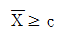
이면 귀무가설을 기각한다.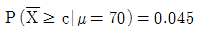
이고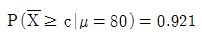
일 때, 다음 설명 중 옳은 것은?- 유의확률(p-값)은 0.045이다.
- 제1종 오류는 0.079이다.
- 제2종 오류는 0.045이다.
- μ=80일 때의 검정력은 0.921이다.
(정답률: 44%)
62. 국회의원 후보 A에 대한 청년층 지지율 p1과 노년층 지지율 p2의 차이 p1-p2는 6.6%로 알려져 있다. 청년층과 노년층 각각 500명씩을 랜덤추출하여 조사하였더니, 위 지지율 차이는 3.3%로 나타났다. 지지율 차이가 줄어들었다고 할 수 있는지를 검정하기 위한 귀무가설 H0와 대립가설 H1은?
- H0 : p1-P2 >0.033, H1 : p1 - P2 > 0.033
- H0 : p1-P2>0.033, H1 : p1 - P2 ≤ 0.033
- H0 : p1-P2＜0.066, H1 : p1 - P2 ≥ 0.066
- H0 : p1-P2=0.066, H1 : p1 - P2 ＜ 0.066
(정답률: 59%)
63. 변동계수(또는 변이계수)에 대한 설명으로 틀린 것은?
- 평균의 차이가 큰 두 집단의 산포를 비교할 때 이용한다.
- 평균을 표준편차로 나눈 값이다.
- 단위가 다른 두 집단자료의 산포를 비교할 때 이용한다.
- 관찰치의 산포의 정도를 상대적으로 비교할 때 이용한다.
(정답률: 46%)
64. 초등학교 학생과 대학생의 용돈의 평균과 표준편차가 다음과 같을 때 변동 계수를 비교한 결과로 옳은 것은?
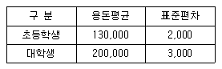
- 초등학생의 용돈이 대학생 용돈보다 상대적으로 더 평균에 밀집되어 있다.
- 대학생 용돈이 초등학생 용돈보다 상대적으로 더 평균에 밀집되어 있다.
- 초등학생 용돈과 대학생 용돈의 변동계수는 같다.
- 평균이 다르므로 비교할 수 없다.
(정답률: 42%)
65. 어느 회사원이 승용차로 출근하는 길에 신호등이 5개 있다고 한다. 각 신호등에서 빨간등에 의해 신호 대기할 확률을 0.2이고, 각 신호등에서 신호 대기 여부는 서로 독립적이라고 가정한다. 어느 날 이 회사원이 5개의 신호등 중 1개의 신호등에서만 빨간등에 의해 신호대기에 걸리고 출근할 확률을 구하는 식은?
- (0.2)1
- 1-(0.8)5
- (0.2)1(0.8)4
- 5(0.2)1(0.8)4
(정답률: 57%)
66. 두 변수 x와 y의 관찰값이 다음과 같을 때 최소제곱법으로 추정한 회귀식으로 옳은 것은?
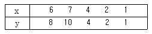
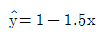
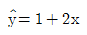
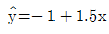
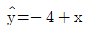
(정답률: 58%)
67. 분산분석에서의 총 변동은 처리 내에서의 변동과 처리 간의 변동으로 구분된다. 그렇다면 각 처리 내에서의 변동의 합을 나타내는 것은?
- 총제곱합
- 처리제곱합
- 급간제곱합
- 잔차제곱합
(정답률: 43%)
68. 모수의 추정에 사용할 추정량이 가져야 할 바람직한 성질이 아닌 것은?
- 편의성
- 일치성
- 유효성
- 비편향성
(정답률: 50%)
69. 두 변수값 X1, X2, ∙∙∙Xn과 Y1, Y2, ∙∙∙, Yn을 각각 표준화한 변수값이 x1, x2∙∙∙xn과 y1, y2 ∙∙∙, yn이다. 표준화된 변수 x와 y의 상관계수는?
- 0
- 1
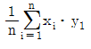
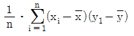
(정답률: 23%)
70. 단순회귀모형 ｢Yi=α+βxi+ɛi, ɛi~N(0,σ2이고 서로 독립(i=1, 2, ∙∙∙, n)에서 가설 H1 : β≠0에 대한 검정통계량은?
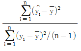
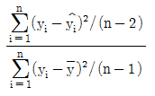
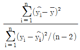
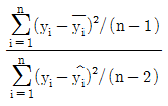
(정답률: 39%)
71. 특수안전모자를 제조하는 회사에서 모자를 착용할 사람들의 머리크기의 평균을 알고 싶어 한다. 사람의 머리둘레는 정규분포를 따른다고 알려져 있으며 이때 표준편차는 약 2.3cm라 한다. 실제 평균 μ를 95% 신뢰수준에서 0.1cm 이하의 오차한계를 추정하려고 할 때 필요한 최소인원은? (단, Z~N(0,1), P(Z＞1.96)=0.025, P(Z＞1.645)=0.⑤)
- 2,000명
- 2,021명
- 2,033명
- 2,035명
(정답률: 49%)
72. 두 확률변수의 상관계수에 대한 설명으로 틀린 것은?
- 상관계수란 두 변수의 공분산을 두 변수의 표준편차의 곱으로 나눈 값으로 정의되는 측도이다.
- 상관계수는 두 변수 사이에 함수관계가 어느 정도 강한가를 나타내는 측도이다.
- 두 확률변수가 서로 독립이면 상관계수는 0이다.
- 두 변수사이에 일차함수의 관계가 존재하면, 상관계수 1 또는 －1이다.
(정답률: 33%)
73. 다중회귀분석에서 변수선택방법이 될 수 없는 것은?
- 실험계획법
- 전진선택법
- 후진소거법
- 단계적방법
(정답률: 43%)
74. 다음 설명 중 옳지 않은 것은?
- 편차의 합은 항상 0이다.
- 중위수는 극단값에 영향을 받지 않는다.
- 사분위수범위는 중심위치에 대한 측도이다.
- 최빈수는 두 개 이상 있을 수 있다.
(정답률: 52%)
75. 모평균이 100, 모표준편차가 20인 무한모집단으로부터 크기 100인 임의표본을 취할 때, 표본평균  의 평균과 표준편차는?
의 평균과 표준편차는?
- 평균＝100, 표준편차＝2
- 평균＝1, 표준편차 ＝2
- 평균＝100, 표준편차＝0.2
- 평균＝1, 표준편차＝0.2
(정답률: 52%)
76. 소득과 인구백분율을 나타내는 데 가장 적합한 그래프는?
- 도수다각형
- Lorenz곡선
- 히스토그램
- 도수분포곡선
(정답률: 38%)
77. 정규분포의 특징에 관한 설명으로 틀린 것은?
- 평균을 중심으로 좌우대칭이다.
- 평균과 중앙값은 동일하다.
- 확률밀도곡선 아래의 면적은 평균과 분산에 따라 달라진다.
- 확률밀도곡선의 모양은 표준편차가 작아질수록 평균 부근의 확률이 커지고, 표준편차가 커질수록 가로축에 가깝게 평평해진다.
(정답률: 53%)
78. 어떤 주사위가 공정한지를 검정하기 위해 실제로 60회를 굴려 아래와 같은 결과를 얻었다. 유의수준 5%에서의 검정결과로 옳은 것은? (단, X2(5, 0.⑤)=11.07)
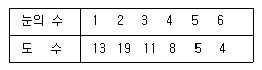
- 주사위는 공정하다고 볼 수 있다.
- 주사위는 공정하다고 볼 수 없다.
- 60번의 시행으로는 통계적 결론의 도출이 어렵다.
- 단지 눈의 수가 2인 면이 이상하다고 볼 수 있다.
(정답률: 53%)
79. 어느 지역의 청년취업률을 알아보기 위해 조사한 500명 중 400명이 취업을 한 것으로 나타났다. 이 지역의 청년 취업률에 대한 95% 신뢰구간은? (단, Z가 표준정규분포를 따르는 확률변수일 때, P(Z＞1.96)=0.025)
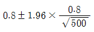
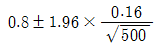
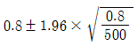
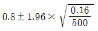
(정답률: 47%)
80. 모평균이 μ이고 모분산이 σ2이며 크기 N인 모집단에서 n개의 표본을 비복원으로 추출할 때, 표본평균
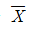
의 분산은?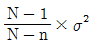
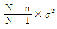
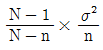
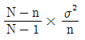
(정답률: 42%)
81. 한 신용카드회사는 12월 한 달 동안 신용카드를 사용한 카드소지자 비율을 95% 신뢰도로 양측 구간추정하려고 한다. 이 때 추정치의 허용오차가 0.02 미만으로 하려면 표본크기는? (단, 모비율에 대한 정보는 전혀 없으며, p(z＞1.645)=0.⑤, p(z＞1.96)=0.025,p(z＞2.325)=0.01, p(z＞2.325)=0.01, p(z＞2.575)=0.0⑤ 이다.)
- 981
- 1,541
- 2,111
- 2,401
(정답률: 44%)
82. 회귀분석에서 결정계수 R2에 대한 설명으로 틀린 것은? (단, SST는 총제곱합, SSR은 회귀제곱합, SSE는 잔차제곱합)
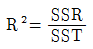
- -1≤R2≤1
- SSE가 작아지면 R2는 커진다.
- R2은 독립변수의 수가 늘어날수록 증가하는 경향이 있다.
(정답률: 50%)
83. 대학생이 졸업 후 취업했을 때 초임수준을 조사하였다. 인문사회계열 졸업자 10명과 공학계열 졸업자 20명을 각각 조사한 결과 평균초임은 210만원과 250만원이었으며 분산은 각각 300만원과 370만원이었다. 두 집단의 평균차이를 추정하기 위한 합동분산(pooled variance)은?
- 325.0
- 324.3
- 346.7
- 347.5
(정답률: 33%)
84. 단순회귀모형 ｢yi=β0+β1xi+ɛi, ɛi~N(0, σ2이고, 서로 독립, i=1,…, n｣ 하에서 모회귀직선 E(y)=β0+β1x를 최소제곱법에 의해 추정한 추정회귀직선을
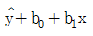
라 할때 다음 설명 중 옳지 않은 것은? (단,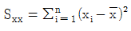
이며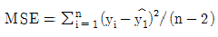
)- 추정량 b1은 평균이 β1이고 분산이 σ2/Sxx인 정규분포를 따른다.
- 추정량 b0은 회귀직선의 절편 β0의 불편추정량이다.
- MSE는 오차항 ɛi의 분산 σ2에 대한 불편추정량이다.
 는 자유도 각각 1, n-2인 F-분포 F(1, n-2)를 따른다.
는 자유도 각각 1, n-2인 F-분포 F(1, n-2)를 따른다.
(정답률: 34%)
85. 어떤 가설검정에서 유의확률(P-값)이 0.044일 때, 검정결과로 옳은 것은?
- 귀무가설을 유의수준 1%와 5%에서 모두 기각할 수 없다.
- 귀무가설을 유의수준 1%와 5%에서 모두 기각할 수 있다.
- 귀무가설을 유의수준 1%에서 기각할 수 없으나 5%에서는 기각할 수 있다.
- 귀무가설을 유의수준 1%에서 기각할 수 있으나 5%에서는 기각할 수 없다.
(정답률: 55%)
86. 사건 A가 일어날 확률이 0.5, 사건 B가 일어날 확률이 0.6, A 또는 B가 일어날 확률이 0.8일 때, 사건 A와 B가 동시에 일어나는 확률은?
- 0.3
- 0.4
- 0.5
- 0.6
(정답률: 65%)
87. A 교양강좌 수강생 300명의 중간고사 성적을 채점한 결과 평균이 75점, 표준편차가 15점이었다. 중간고사에서 60점 이상 90점 이하의 성적을 받은 학생 수는 대략 몇 명이 되겠는가? (단, 중간고사 성적은 정규분포를 따르며, Z~N(0, 1)일 때 P(Z≥1)=0.159이다.)
- 159명
- 182명
- 196명
- 2⑤명
(정답률: 44%)
88. 어느 정당에서든 새로운 정책에 대한 찬성과 반대를 남녀별로 조사하여 다음의 결과를 얻었다. 남녀별 찬성률에 차이가 있다고 볼 수 있는가에 대하여 검정할 때 검정통계량을 구하는 식은?
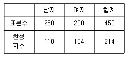
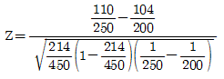
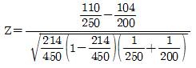
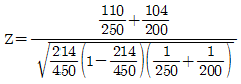
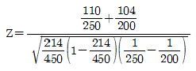
(정답률: 40%)
89. 다음의 가상의 자료를 이용하여 단순선형회귀모형을 추정하면?
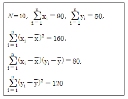
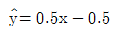
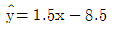
(정답률: 52%)
90. 최근 5년 간 평균 경제성장률을 구할 때 적합한 대푯값은?
- 산술평균
- 중위수
- 조화평균
- 기하평균
(정답률: 44%)
91. 어느 중학교 1학년 학생들의 신장을 조사한 결과 평균은 136.5cm, 중앙값은 130.0cm, 표준편차는 2.0cm이었다. 학생들의 신장의 분포에 대한 설명으로 옳은 것은?(오류 신고가 접수된 문제입니다. 반드시 정답과 해설을 확인하시기 바랍니다.)
- 오른쪽으로 긴 꼬리를 갖는 비대칭분포이다.
- 왼쪽으로 긴 꼬리를 갖는 비대칭분포이다.
- 정규분포이다.
- 이들 자료로는 알 수 없다.
(정답률: 56%)
92. 행변수가 M개의 범주를 갖고 열변수가 N개의 범주를 갖는 분할표에서 행변수와 열변수가 서로 독립인지를 검정하고자 한다. (i, j)셀의 관측도수를 Oij, 귀무가설하에서의 기대도수의 추정치를 라 하고, 이때 사용되는 검정통계량은 이다. 여기서  는? (단, 전체 데이터 수는 n이고 i번째 행의 합은 ni+,j번째 열의 합은 n+j이다.)
는? (단, 전체 데이터 수는 n이고 i번째 행의 합은 ni+,j번째 열의 합은 n+j이다.)
(정답률: 57%)
93. 다음 중 이항분포를 따르지 않는 것은?
- 주사위를 10번 던졌을 때 짝수의 눈의 수가 나타난 횟수
- 어떤 기계에서 만든 5개의 제품 중 불량품의 개수
- 1시간 동안 전화교환대에 걸려오는 전화 횟수
- 한 농구선수가 던진 3개의 자유투 중에서 성공한 자유투의 수
(정답률: 65%)
94. 미국에서는 인종간의 지적 능력의 근본적 차이를 강조하는 “종모양 곡선(Bell Curve)”이라는 책이 논란을 불러 일으킨 적이 있다. 만약 흑인과 백인의 지능지수의 차이를 단순비교 할 목적으로 각각 20명씩 표본추출하여 조사할 때 가장 적합한 검정도구는?
- X2-검정
- t-검정
- F-검정
- Z-검정
(정답률: 54%)
95. 주사위를 120번 던져서 나타난 눈의 수를 관측한 결과가 다음과 같았다. 이 주사위가 공정한 주사위인가를 검정하기 위한 검정통계량의 값을 구하면?
- 0
- 0.125
- 2.0
- 2.5
(정답률: 40%)
96. 일원배치 분산분석에서 다음과 같은 결과를 얻었을 때, 처리효과의 유의성 검정을 위한 검정통계량의 값은?
- 1.83
- 1.90
- 2.75
- 2.85
(정답률: 44%)
97. 다음 ( )에 알맞은 것은?
- 추정
- 상관분석
- 회귀분석
- 분산분석
(정답률: 42%)
98. k개 처리에서 n회씩 실험을 반복하는 일원배치모형 xij=μ+ai+ɛij에 관한 설명으로 틀린 것은? (단, i=1, 2, ∙∙∙, k이고 j=1, 2,∙∙∙, n이며 ɛij~N(0, σ2))
- 오차항 ɛij들의 분산은 같다.
- 총 실험 횟수는 k×n이다.
- 총 평균 μ와 i번째 처리효과 ai는 서로 독립이다.
- xij는 i번째 처리의 j번째 관측값이다.
(정답률: 47%)
99. 독립시행의 횟수가 n고 성공률이 p인 이항분포에서 성공이 k번 이상 발생할 확률을 바르게 표현한 것은?
(정답률: 36%)
100. 두 확률변수 X, Y 서로 독립이며 표준정규분포를 따른다. 이 때 U=X+Y, V=X-Y로 정의하면 두 확률변수 U, V는 각각 어떤 분포를 따르는가?
- U, V 두 변수 모두 N(0, 2)를 따른다.
- U~N(0, 2)를 U~N(0, 1)를 따른다.
- U~N(0, 1)를 U~N(0, 2)를 따른다.
- U, V 두 변수 모두 N(0, 1)를 따른다.
(정답률: 27%)